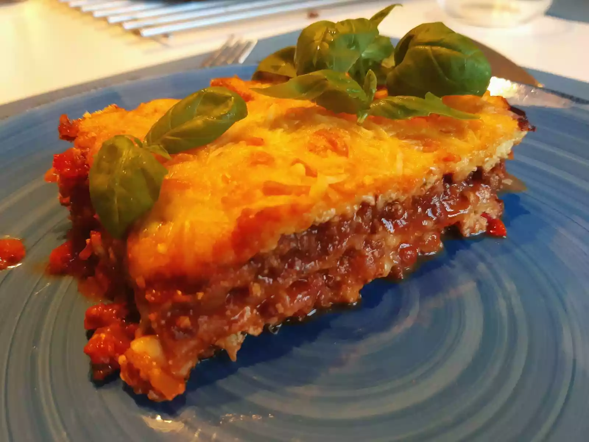

- ⏲️ Prep Time: 1 hr
- üç≥ Cook Time: 45 mins
- üçΩÔ∏è Servings: 6
About the dish
Lasagne are a type of pasta, possibly one of the oldest types, made of
very wide, flat sheets. Either term can also refer to an Italian dish made
of stacked layers of lasagne alternating with fillings
What you need
- Parmesan cheese
- Emental cheese (optional)
- Dry mozzarella cheese
- Fresh Bolognese sauce or about 1 litre worth of store-bought sauce
- Béchamel sauce or ricotta lasagna filling
- Lasagna pasta sheets
How to make
- Prepare the bolognese or jared pasta sauce.
- When the sauce is almost done cooking prepare your béchamel or ricotta filling.
- If you want you can add 3-4 handfuls of grated emental cheese to the béchamel.
- If necessary, boil the lasagna noodles following the instructions on the packaging, start preheating your oven
to 175°C/350°F.
- Spread a thin layer of pasta sauce on the bottom of a large, deep baking tray.
- Cover with lasagna sheets and spread a layer of béchamel sauce or ricotta, cover with lasagna sheets and
spread a layer of pasta sauce if you want you can finely grate a little bit of parmesan on each layer of
bolognese.
- Rinse and repeat the previous step until the tray is nearly full or you are running low on béchamel
sauce/ricotta filling, take care that the last layer should be bechamel or ricotta.
- Grate some parmesan on top of your final layer and cover with Dry mozzarella cheese, wrap the top in aluminum
foil.
- Place the tray in the centre of your pre-heated oven and let it cook for 30-35 minutes, after that remove the
foil to let the top brown.
- Once it is done cooking take it out of the oven and cover again with aluminum foil, let it rest for 10 minutes
before serving.